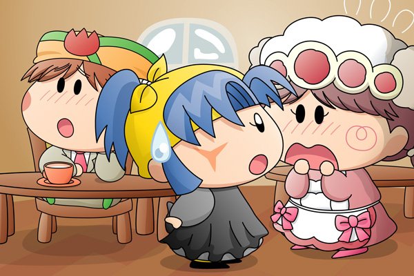

マンボ「いつもの・・・」
ソフト「ホットミルクぽよね」
翌日、マンボがいつものようにソフトの喫茶店へとやってきました。
怪盗チョコソフトを捕まえられなかったからか、元気のないマンボはぼーっとしています。
ソフト「マンボくん・・・」
マンボ「う～～ん・・・」
ソフト「マンボくん、あの・・私でよければ力になるぽよ」
マンボ「・・・ねぇソフトちゃん、
オレ、恋をしちゃったみたいなんだ」
ソフト「ぽよ！？」
マンボ「よりにもよってライバルの怪盗チョコソフトに恋しちゃうなんて…。
昨日からチョコソフトのことがずっと頭から離れないんだ。
これって恋なんだよね？」
ソフト「ぽよよ！？」
マンボ「でもオレは怪盗チョコソフトを捕まえなければいけないし、
それにダイヤも全部取られちゃったからもうチョコソフトは
現れないのかも…」
ソフト「そ、そうぽよね・・・」
マンボ「！・・・がーん・・・」
ソフト「や、やっぱりそんなことはないぽよ」
ちょうどヤマネが通りかかったので、ソフトはヤマネを呼び止め、ひそひそと話し始めました。

ソフト「ヤマネちゃん、これはどうなっているぽよ？」
ヤマネ「も、申し訳ありません。
服装が違うとうまくいかないようでございますね・・・」
ソフト「私はもう怪盗チョコソフトにはならないと決めたから、
このままだとマンボくんがかわいそうぽよ。
どうにかして元に戻せないぽよ？」
ヤマネ「戻し方は勉強しないと分からないのでございます」
ソフト「そんな・・・」
マンボ「チョコソフトはどんなお菓子が好きなのかなぁ。
初デートはお菓子デパートがいいかなぁ」
マンボは怪盗チョコソフトのことばかりが気になっているようです。
最近は絵を描くのが遅くてすみませんです。場面は翌日に移動して、そして前回怪盗チョコソフトによって封印の解かれたヤマネは、ソフトの喫茶店にひとまず居候していることになっています。
ストーリーはさらにわけの分からない展開になってきましたが、長く(?)続いたストーリーも一応次回で最終回の予定です。次回できっちり終わらせられるよう、がんばって描きたいと思います～(^^)。
(2007/7/14)